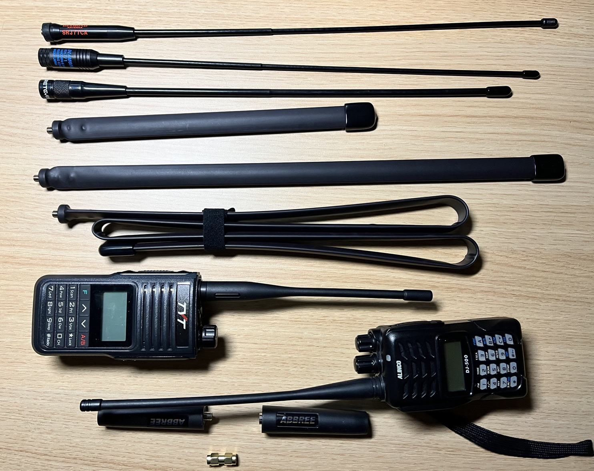
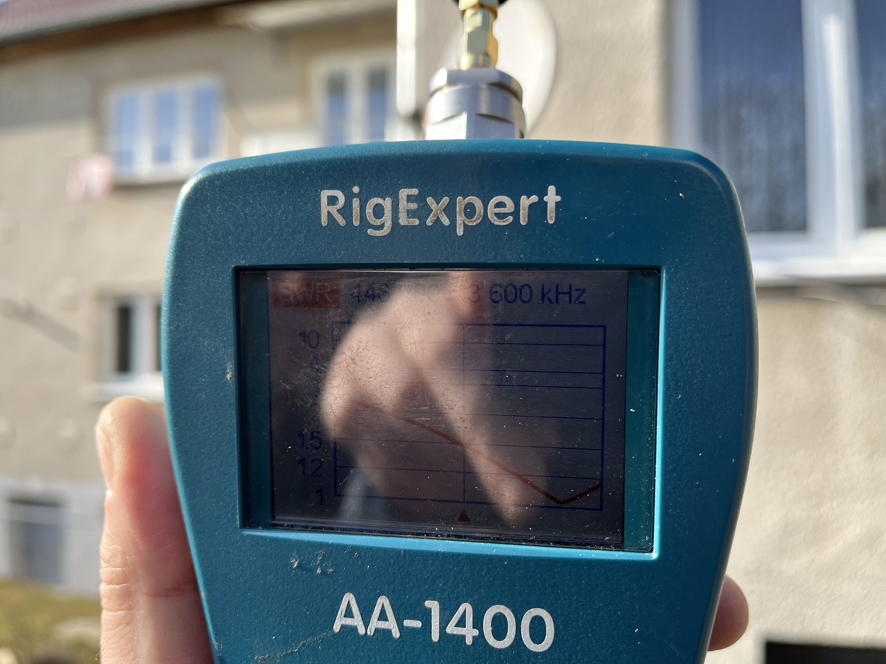
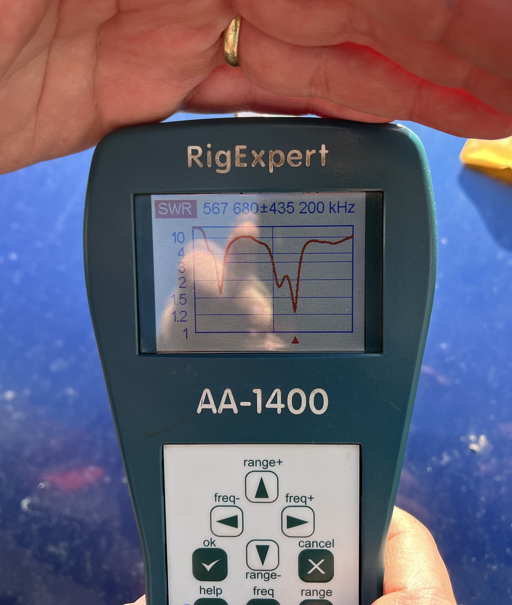

Představení autorů, testů a motivací
Ruda OK2ZA
Rudu asi znají skoro všichni olicencovaní, kdy je asi v naší republice nejlepší turistický průvodce leteckou dopravou, pokud potřebujete odbavit na přestupních letištích kdejakého totalitního státu až do cílového na konci světa. Což o to odbavit, tady se ale bavíme o 600kg trubek stožárů a antén, které musíte rychle vybalit pro pročichání na drogy a prohmatání pro určitě schované špiónské vybavení, a zase rychle zabalit pro stíhání odletu. Popřípadě jako šéftrenér na surfování na ostrově bez dalších turistů s výškou ostrova 3m nad hladinou v oceánu se 7m vlnami. A ostatním musí stačit, že v některých světových tabulkách je skoro běžně se svou tlupou na 2. místě.
Takže jsem věděl, koho oslovím s prosbou o měření. O zbytečné měření, jak jsem si myslel a asi né docela jediný.
Arnošt905
Mně znají hlavně jako né zcela pochopitelného, kdy mám rád dálkovou cykloturistiku v partách, u kterých nikdo nečeká dojetí 650 - 1000km plánovaného putování. Pro cestování po eurostezkách na hranicích států, kde není ani mobilní signál, ani kde nabrat vodu, natož se někde ve stínu či v suchu schovat. A členem takové cyklobandy je praktický slepec s dohledem 9m, kdy rozezná ceduli 2x2m a nerozpozná barvu cedule, nebo důchodce 81let, nyní už má víc, ale tehdy jeho první slova byla při setkání "Se mnou nebudou problémy, už jsem si předplatil pohřeb." A taky že s ním problémy nejsou :-D Popř. borec po mrtvici, kdy mu jedna ruka visí na gumě od trenek zavěšená na řídítku a šlape jen jednou nohou, nebo šikula, kterého vytáhli z výtahové šachty a za 2 roky v obdobném stavu zase sedlá kolo :-D Ano, takové bývá složení týmů našich expedic běžně, a tak vysílačka hraje dost velkou roli a navíc jsou to taky hračky, jsme přeci jen velcí kluci.
Zkuste v tomto složení jednou rukou za jízdy vytáčet na šudličovém telefonu skupinové volání, že.
První Motorolu 5450 nebo Intek MT400 jsem utopil, a tak jsem si koupil Motorolu T-82 Extreme. Nikomu to nedoporučuju zopakovat, bo na protipovodňových valech řeky Odry na vzdálenost ztráty viditelnosti přes křoví kleklo spojení. Ono ostatně není ani ve městech na zhruba 600m po přejetí přes horizont, či jen a pouze za roh. Tak jsem si zaktivoval Alinco DJ-500, z čajná si poslal aku a vyrazil do lesů. No, 200m od televizního vysílače najednou ticho. Ale opravdu ticho... Tak jsem si vyhlídl TYT TH-UV99 a kupoval a kupoval kdejaké antény pro zlepšení příjmu.
Jako co mám tady vysvětlovat, když jste se starcem na obhlídce přespání, najednou se přiřítí slepec, že ztratil mrtvičáka, a Vy vyjedete na objížďku asi 6 německých vesnic bez mobilního i vysílačkového signálu... Když jako nahluchlý musíš slyšet, tak prostě musíš slyšet.
Naštěstí antény dorazily, Ruda má měřák a k tomu měl i čas.

Metodika měření antén
To si takto v únoru počkáte na slunečné počasí, bezvětří, naměříte 13*C ve 14:30 24.2.2025, položíte to všechno na přední kapotu osobáku, vytáhnete bonzblok, načrtnete tabulku a začnete zajímavých 45 minut. Na fotce kromě Rudova měřáku vidíte od shora:
- Diamond SRJ77CA sma-female
- Diamond RH771 sma-male
- Retevis RHD771 sma-male
- Taktický prut 33cm
- Taktický prut 48cm
- Taktický prut 124cm
- TYT TH-UV99
- Alinco DJ-500
- Cívky taktických antén sma-female a sma-male
- SMA-SMA adapter m/m
- Měřák RigExpert AA-1400 s redukci na sma-female
Ilustrační náhledy na měřák
Nejdříve na slunci.

Poté s profesionálním zastíněním.

Tabulka vítězů
Co se týče samotných antén, tak překvapí originální pendrek Alinca, sice už památeční, ale na vyhození, a Retevis anténa, kterou jsem odsoudil a měření mi vydalo reparát, že problém byl počítačově mezi klávesnicí a žídlí, kdy jsem ji označil nepoužitelnou na 172MHz. Není nad zdravou sebedůvěru :-D Na kmitočtu 446 MHz jsme neměřili, bo jako proč, když žádnou z těch antén na PMR vysílání používat nemáme a vzdělanější či sečtělejší si potřebné odvodí.
Co se týče naměřených hodnot, tak tady asi většina ví, že hodnota nad 2 u stacionárních antén je docela špatně, ale v případě ruček, kdy se protiváha mění s výškou nad zemí či blízko automobilu, tak se dají "použít" i do hodnoty zhruba 4. Od 5 je to už opravdu, ale opravdu špatně... Hodnota 20 vyadřuje nekonečno a není to veselé nekonečno Dana Nekonečného.
Co se týče "taktických" antén, tak cívka by měla být pro každou délku jiná. Je ale "stejná" v rámci nákladů na kvalitu a navíc pro rozdílné konektory jiná. No, je i rozdílná u shodných konektorů... A hodnocení není úplně košér i pro mechanické provedení, kdy to není jen jeden pásek svinovacího metru, ale 2 spojené bříšky ven, a anténa je tak skládaná pro udržení tvaru. Parametr SWR se tak bude "plynule" zhoršovat používáním. Délku 124cm na ručce opravdu nechcete, bo reálně hrozí ulomení konektoru na ručce, a já tuto délku 124cm mám na kole připevněnou k prutu "bezpečnostní" vlaječky. Na poslech to nevadí.
Vzhledem jen k jedné redukci na měřáku, jsme u antén s konektorem sma-female museli použít přechodku SMA-SMA m/m. Zcela určitě to nějaký vliv má, ale v tomto případě zcela určitě ignorovatelný.
| Anténa / SWR dle kmitočtu | 145 MHz | 172 MHz | 435 MHz | 442 MHz | 448 MHz |
|---|---|---|---|---|---|
| Taktik 33cm sma-female | 1,7 | 2,7 | 3,2 | 2,7 | 2,4 |
| Taktik 48cm sma-female | 5,5 | 3,9 | 2 | 1,7 | 1,6 |
| Taktik 124cm sma-female | 2,5 | 4 | 1,33 | 1,3 | 1,38 |
| Diamond SRJ77CA sma-female | 3,8 | 1,9 | 2,2 | 1,7 | 1,37 |
| origo pendrek Alinco DJ-500 sma-female | 5,5 | 5,5 | 6,3 | 5,8 | 5,3 |
| Retevis RHD771 sma-male | 3,4 | 1,5 | 1,7 | 2 | 2,5 |
| Diamond RH771 sma-male | 4,7 | 1,34 | 1,7 | 1,5 | 1,6 |
| origo pendrek TYT TH-UV99 sma-male | 1,28 | 20 | 3,5 | 3,2 | 2,7 |
| Taktik 33cm sma-male | 3 | 2,5 | 9 | 9,3 | 9,4 |
| Taktik 48cm sma-male | 1,4 | 1,29 | 3,6 | 3,3 | 2,9 |
| Taktik 124cm sm-male | 2,9 | 1,2 | 3,2 | 3,6 | 4,1 |
Anténa / SWR dle kmitočtu Mhz
| Taktik 33cm sma-female | ||||
|---|---|---|---|---|
| 145Mhz | 172MHz | 435MHz | 442MHz | 448Mhz |
| 1,7 | 2,7 | 3,2 | 2,7 | 2,4 |
| Taktik 48cm sma-female | ||||
|---|---|---|---|---|
| 145Mhz | 172MHz | 435MHz | 442MHz | 448Mhz |
| 5,5 | 3,9 | 2 | 1,7 | 1,6 |
| Taktik 124cm sma-female | ||||
|---|---|---|---|---|
| 145Mhz | 172MHz | 435MHz | 442MHz | 448Mhz |
| 2,5 | 4 | 1,33 | 1,3 | 1,38 |
| Diamond SRJ77CA sma-female | ||||
|---|---|---|---|---|
| 145Mhz | 172MHz | 435MHz | 442MHz | 448Mhz |
| 3,8 | 1,9 | 2,2 | 1,7 | 1,37 |
| origo pendrek Alinco DJ-500 sma-female | ||||
|---|---|---|---|---|
| 145Mhz | 172MHz | 435MHz | 442MHz | 448Mhz |
| 5,5 | 5,5 | 6,3 | 5,8 | 5,3 |
| Retevis RHD771 sma-male | ||||
|---|---|---|---|---|
| 145Mhz | 172MHz | 435MHz | 442MHz | 448Mhz |
| 3,4 | 1,5 | 1,7 | 2 | 2,5 |
| Diamond RH771 sma-male | ||||
|---|---|---|---|---|
| 145Mhz | 172MHz | 435MHz | 442MHz | 448Mhz |
| 4,7 | 1,34 | 1,7 | 1,5 | 1,6 |
| origo pendrek TYT TH-UV99 sma-male | ||||
|---|---|---|---|---|
| 145Mhz | 172MHz | 435MHz | 442MHz | 448Mhz |
| 1,28 | 20 | 3,5 | 3,2 | 2,7 |
| Taktik 33cm sma-male | ||||
|---|---|---|---|---|
| 145Mhz | 172MHz | 435MHz | 442MHz | 448Mhz |
| 3 | 2,5 | 9 | 9,3 | 9,4 |
| Taktik 48cm sma-male | ||||
|---|---|---|---|---|
| 145Mhz | 172MHz | 435MHz | 442MHz | 448Mhz |
| 1,4 | 1,29 | 3,6 | 3,3 | 2,9 |
| Taktik 124cm sm-male | ||||
|---|---|---|---|---|
| 145Mhz | 172MHz | 435MHz | 442MHz | 448Mhz |
| 2,9 | 1,2 | 3,2 | 3,6 | 4,1 |
Shrnutí
V případě továrních antén pochopíte rčení, že něco "stojí to za pendrek". Jen tytová je vhodná na amatérských 145MHz. Na taktické délce 124cm nbo 48cm je vidět vliv jiného provedení cívky, v tomto případě dle konektoru, že výměnou cívky bude zářič buď na sdílených 172MHz nebo univerzálně na 70cm. Pobaveně jsme kvitovali, že všechny ty kombinace taktických antén velice pěkně vysílají na všemi používaných kmitočtech od 660 do 780MHz... Ostatně, co čekat od antén uvedených původně pro mužiky ruské armády s Beofangy UV-5R po napadení Ukrajiny v roce 2022, kdy se požaduje jen lepší příjem a zpětné relace už nikdo ani nepředpokládá. U nich ale nepopíráme levnou nahraditelnost.
Nejen letmým pohledem na tabulku vidíme zcela překvapivě oba Diamondy jako vítěze, kdy zaváhaly jen na 145MHz, na 3. místě Retevis RHD771, v podstatě skokan roku. Pak už jen hračičkování s taktickýma anténama.